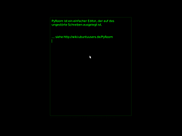

PyRoom
Dieser Artikel wurde für die folgenden Ubuntu-Versionen getestet:
Ubuntu 16.04 Xenial Xerus
Ubuntu 14.04 Trusty Tahr
Zum Verständnis dieses Artikels sind folgende Seiten hilfreich:
PyRoom  ist ein einfacher Editor, der für das ablenkungsfreie und ungestörte Schreiben von Texten ausgelegt ist. Er läuft im Vollbild-Modus und das Standard-Design zeigt grüne Schrift auf schwarzem Grund. Weitere Designs stehen zur Auswahl, bei Bedarf kann man auch eigene Designs erstellen. Das Programm besitzt keine Funktionen zur Textformatierung, da diese in der Kreativ-Phase nur stören. Abgespeichert wird daher im Format "Nur-Text".
ist ein einfacher Editor, der für das ablenkungsfreie und ungestörte Schreiben von Texten ausgelegt ist. Er läuft im Vollbild-Modus und das Standard-Design zeigt grüne Schrift auf schwarzem Grund. Weitere Designs stehen zur Auswahl, bei Bedarf kann man auch eigene Designs erstellen. Das Programm besitzt keine Funktionen zur Textformatierung, da diese in der Kreativ-Phase nur stören. Abgespeichert wird daher im Format "Nur-Text".
Zusätzlich kann Ambient Noise auf Wunsch für eine entsprechende Geräuschkulisse sorgen. Eine Alternative zu PyRoom bietet das Programm FocusWriter.
Installation¶
 PyRoom ist in den offiziellen Paketquellen enthalten und lässt sich über das folgende Paket installieren [1]:
pyroom (universe)
 mit apturl
mit apturl
Paketliste zum Kopieren:
sudo apt-get install pyroom
sudo aptitude install pyroom
Anschliessend kann man das Programm als pyroom starten [2]
Bedienung¶
Da die Anwendung keine Menüleiste besitzt, werden die möglichen Aktionen über Tastenkombinationen gesteuert.
| PyRoom Tastenkombinationen | |
| Taste | Funktion |
| Strg + H | Hilfe in einem neuen Fenster anzeigen |
| Strg + I | Informationen über das aktuelle Fenster anzeigen |
| Strg + P | Einstellungsdialog anzeigen |
| Strg + N | Neues Fenster öffnen |
| Strg + O | Datei in neuem Fenster öffnen |
| Strg + Q | Beenden |
| Strg + S | Speichern |
| Strg + ⇧ + S | Speichern unter |
| Strg + W | Fenster schließen |
| Strg + Y | Wiederherstellen |
| Strg + Z | Rückgängig |
| Strg + Bild ↑ | Zu vorherigem Fenster schalten |
| Strg + Bild ↓ | Zu nächstem Fenster schalten |
Konfiguration¶
Im Einstellungsdialog, der mit Strg + P aufgerufen wird, können
das automatische Speichern
der Rahmen
die Schriftart und
das Thema
konfiguriert werden.
Hinweis:
Erstellt man unter "Themes" eine "Benutzerdefinierte Vorlage", sollte man diese vor dem Beenden des Programms sichern, da sonst die Änderungen verloren gehen.
Links¶
Entwickler-Team auf Launchpad
Volle Konzentration: PyRoom - Blogbeitrag, 12/2009
Notizen
 ergänzende Programme
ergänzende ProgrammeSchreibtrainer
Erlernen des effizienten und schnellen Schreibens mit einer Computertastatur
- Erstellt mit Inyoka
-
 2004 – 2017 ubuntuusers.de • Einige Rechte vorbehalten
2004 – 2017 ubuntuusers.de • Einige Rechte vorbehalten
Lizenz • Kontakt • Datenschutz • Impressum • Serverstatus -
Serverhousing gespendet von